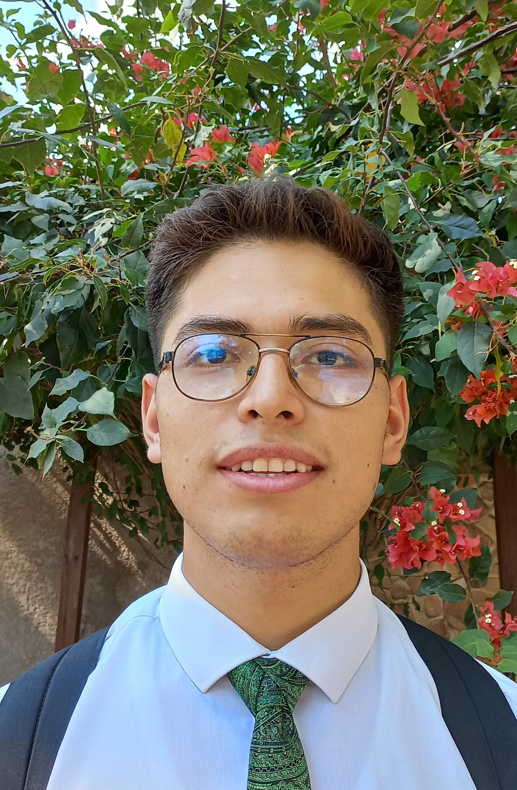

Jared Mendez | WDD 130
Hey, this is Jared I was born and raised in Bolivia, and in 2019 I went to the Brazil where I spent two years learning English and Portuguese as well as gaining valuable experience in customer-facing roles. In 2021 I returned to Bolivia where I am focusing on my passion for technology. I enjoy swimming, basketball, reading, volley ball, and skate, I am one of four children and returned from my mission in Brazil like 2 years ago, now Im married and waiting for our first doughter. I hope to be a Full stack Web developer working for a company in Bolivia, Jala Soft, or for another one in USA remotely, as I told you I'm married and I have been working as a Virtual Assistant for a company in USA for 2 years, this Job helped me to improve my English skills and computer skills, that is a reason to look for a remote Job from Bolivia in USA.